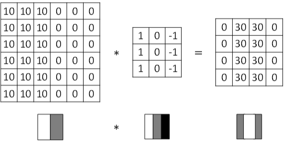
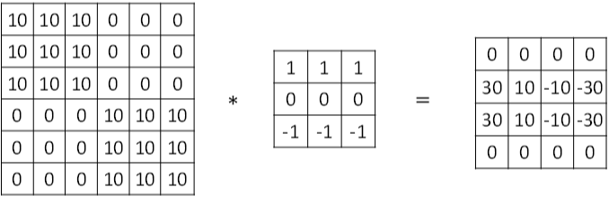
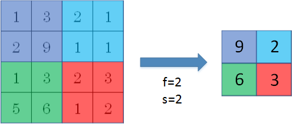

卷积神经网络基础
计算机视觉
应用分类
机器视觉（Computer Vision）是深度学习应用的主要方向之一。一般的CV问题包括以下三类：
- 图像分类
- 目标检测
- 神经风格迁移
下图展示了一个神经风格迁移（Neural Style Transfer）的例子：

图像处理问题以及解决方法
使用传统神经网络处理机器视觉的一个主要问题是输入层维度很大。例如一张64x64x3的图片，神经网络输入层的维度为12288。如果图片尺寸较大，例如一张1000x1000x3的图片，神经网络输入层的维度将达到3百万，使得网络权重W非常庞大。这样会造成两个后果，一是神经网络结构复杂，数据量相对不够，容易出现过拟合；二是所需内存、计算量较大。解决这一问题的方法就是使用卷积神经网络（CNN）。
边缘检测问题
对于CV问题，我们在之前的笔记中介绍过，神经网络由浅层到深层，分别可以检测出图片的边缘特征 、局部特征（例如眼睛、鼻子等）、整体面部轮廓。

这一小节我们将介绍如何检测图片的边缘。
最常检测的图片边缘有两类：一是垂直边缘（vertical edges），二是水平边缘（horizontal edges）。

卷积
图片的边缘检测可以通过与相应滤波器进行卷积来实现。以垂直边缘检测为例，原始图片尺寸为6x6，滤波器filter尺寸为3x3，卷积后的图片尺寸为4x4，得到结果如下：
上图只显示了卷积后的第一个值和最后一个值。
" * "表示卷积操作。python中，卷积用conv_forward()表示；
边缘检测
垂直边缘检测
垂直边缘检测能够检测图片的垂直方向边缘。下图对应一个垂直边缘检测的例子：

渐变影响
图片边缘有两种渐变方式，一种是由明变暗，另一种是由暗变明。以垂直边缘检测为例，下图展示了两种方式的区别。实际应用中，这两种渐变方式并不影响边缘检测结果，可以对输出图片取绝对值操作，得到同样的结果。
水平边缘检测
垂直边缘检测和水平边缘检测的滤波器算子如下所示：
下图展示一个水平边缘检测的例子：

其它常用的滤波器
除了上面提到的这种简单的垂直、水平滤波器之外，还有其它常用的滤波器，例如Sobel滤波器和Scharr滤波器。这两种滤波器的特点是增加图片中心区域的权重。
上图展示的是垂直边缘检测算子，水平边缘检测算子只需将上图顺时针翻转90度即可。
在深度学习中，如果我们想检测图片的各种边缘特征，而不仅限于垂直边缘和水平边缘，那么滤波器的数值一般需要通过模型训练得到，类似于标准神经网络中的权重W一样由梯度下降算法反复迭代求得。CNN的主要目的就是计算出这些滤波器的数值。确定得到了这些滤波器后，CNN浅层网络也就实现了对图片所有边缘特征的检测。
填充（padding）
按照我们上面讲的图片卷积，如果原始图片尺寸为n x n，滤波器尺寸为f x f，则卷积后的图片尺寸为(n-f+1) x (n-f+1)，注意f一般为奇数。这样会带来两个问题：
- 卷积运算后，输出图片尺寸缩小
- 原始图片边缘信息对输出贡献得少，输出图片丢失边缘信息
为了解决图片缩小的问题，可以使用填充方法，即把原始图片尺寸进行扩展，扩展区域补零，用p来表示每个方向扩展的宽度。

经过padding之后，原始图片尺寸为(n+2p) x (n+2p)，filter尺寸为f x f，则卷积后的图片尺寸为(n+2p-f+1) x (n+2p-f+1)。若要保证卷积前后图片尺寸不变，则p应满足：
没有填充操作，p=0，我们称之为“空卷积”；有填充操作，$p=\frac{f-1}{2}$，我们称之为“相同卷积”。
卷积步长（Strided Convolutions）
步长stride表示过滤器在原图片中水平方向和垂直方向每次的步进长度。之前我们默认stride=1。若stride=2，则表示过滤器每次步进长度为2，即隔一点移动一次。
我们用s表示步长，p表示填充长度，如果原始图片尺寸为n x n，滤波器尺寸为f x f，则卷积后的图片尺寸为：
上式中，$\lfloor\cdots\rfloor$表示向下取整。
值得一提的是，相关系数（cross-correlations）与卷积（convolutions）之间是有区别的。实际上，真正的卷积运算会先将滤波器绕其中心旋转180度，然后再将旋转后的滤波器在原始图片上进行滑动计算。滤波器旋转如下所示：

比较而言，相关系数的计算过程则不会对滤波器进行旋转，而是直接在原始图片上进行滑动计算。
其实，目前为止我们介绍的CNN卷积实际上计算的是相关系数，而不是数学意义上的卷积。但是，为了简化计算，我们一般把CNN中的这种“相关系数”就称作卷积运算。
之所以可以这么等效，是因为滤波器算子一般是水平或垂直对称的，180度旋转影响不大；而且最终滤波器算子需要通过CNN网络梯度下降算法计算得到，旋转部分可以看作是包含在CNN模型算法中。总的来说，忽略旋转运算可以大大提高CNN网络运算速度，而且不影响模型性能。
卷积运算服从结合律：
卷积为何有效
对于3通道的RGB图片，其对应的滤波器算子同样也是3通道的。例如一个图片是6 x 6 x 3，分别表示图片的高度（height）、宽度（weight）和通道（channel）。
3通道图片的卷积运算与单通道图片的卷积运算基本一致。过程是将每个单通道（R，G，B）与对应的filter进行卷积运算求和，然后再将3通道的和相加，得到输出图片的一个像素值。

不同通道的滤波算子可以不相同。例如R通道滤波器实现垂直边缘检测，G和B通道不进行边缘检测，全部置零，或者将R，G，B三通道滤波器全部设置为水平边缘检测。
为了进行多个卷积运算，实现更多边缘检测，可以增加更多的滤波器组。例如设置第一个滤波器组实现垂直边缘检测，第二个滤波器组实现水平边缘检测。这样，不同滤波器组卷积得到不同的输出，个数由滤波器组决定。
若输入图片的尺寸为$n × n × n_c$，滤波器尺寸为$f × f × n_c$，则卷积后的图片尺寸为$(n-f+1) × (n-f+1) × n_c'$。其中，$n_c$为图片通道数目，$n_c'$为滤波器组个数。
单层卷积网络
卷积神经网络的单层结构如下所示：

相比之前的卷积过程，CNN的单层结构多了激活函数ReLU和偏移量b。整个过程与标准的神经网络单层结构非常类似：
相比之前的卷积过程，CNN的单层结构多了激活函数ReLU和偏移量b。整个过程与标准的神经网络单层结构非常类似：
卷积运算对应着上式中的乘积运算，滤波器组数值对应着权重$W^{[l]}$，所选的激活函数为ReLU。
我们来计算一下上图中参数的数目：每个滤波器组有3x3x3=27个参数，还有1个偏移量b，则每个滤波器组有27+1=28个参数，两个滤波器组总共包含28x2=56个参数。我们发现，选定滤波器组后，参数数目与输入图片尺寸无关。所以，就不存在由于图片尺寸过大，造成参数过多的情况。例如一张1000x1000x3的图片，标准神经网络输入层的维度将达到3百万，而在CNN中，参数数目只由滤波器组决定，数目相对来说要少得多，这是CNN的优势之一。
最后，我们总结一下CNN单层结构的所有标记符号，设层数为$l$。
- $f^{[l]}$= 滤波器大小
- $p^{[l]}$ = 填充
- $s^{[l]}$= 步长
- $n_c^{[l]}$ = 滤波器组数量
输入维度为：$n_H^{[l-1]}×n_W^{[l-1]}×n_c^{[l-1]}$
每个滤波器组维度为：$f^{[l]} × f^{[l]} × n_c^{[l-1]}$
权重维度为：$f^{[l]}×f^{[l]}×n_c^{[l-1]}×n_c^{[l]}$
偏置维度为：$1 × 1 × 1 ×n_c^{[l]}$
输出维度为：$n_H^{[l]}×n_W^{[l]}×n_c^{[l]}$
其中，
如果有m个样本，进行向量化运算，相应的输出维度为：
简单的卷积网络示例
下面介绍一个简单的CNN网络模型：

该CNN模型各层结构如上图所示。需要注意的是，$a^{[3]}$的维度是7 x 7 x 40，将$a^{[3]}$排列成1列，维度为1960 x 1，然后连接最后一级输出层。输出层可以是一个神经元，即二元分类（logistic）；也可以是多个神经元，即多元分类（softmax）。最后得到预测输出$\hat y$。
值得一提的是，随着CNN层数增加，$n_H^{[l]}$和$n_W^{[l]}$一般逐渐减小，而$n_c^{[l]}$一般逐渐增大。
CNN有三种层：
- 卷积层（CONV）
- 池化层（POOL）
- 全连接层（FC）
CONV最为常见也最重要，关于POOL和FC我们之后再介绍。
池化层
池化层是CNN中用来减小尺寸，提高运算速度的，同样能减小噪声影响，让各特征更具有健壮性。
池化层的做法比卷积层简单许多，没有卷积运算，仅仅是在滤波器算子滑动区域内取最大值，即最大池化(max pooling)，这是最常用的做法。注意，超参数p很少在池化层中使用。

最大池化的好处是只保留区域内的最大值（特征），忽略其它值，降低噪声影响，提高模型健壮性。而且，噪声需要的超参数仅为滤波器尺寸f和滤波器步进长度s，没有其他参数需要模型训练得到，计算量很小。
如果是多个通道，那么就每个通道单独进行最大池化操作。
除了最大池化之外，还有一种做法：平均池化(average pooling)。顾名思义，平均池化就是在滤波器算子滑动区域计算平均值。

实际应用中，最大池化比平均池化更为常用。
CNN示例
下面介绍一个简单的数字识别的CNN例子：

图中，CON层后面紧接一个POOL层，CONV1和POOL1构成第一层，CONV2和POOL2构成第二层。特别注意的是FC3和FC4为全连接层FC，它跟标准的神经网络结构一致。最后的输出层（softmax）由10个神经元构成。
整个网络各层的尺寸和参数如下表格所示：
使用卷积的原因
相比标准神经网络，CNN的优势之一就是参数数目要少得多。参数数目少的原因有两个：
- 参数共享：一个特征检测器（例如垂直边缘检测）对图片某块区域有用，同时也可能作用在图片其它区域。
- 连接的稀疏性：因为滤波器算子尺寸限制，每一层的每个输出只与输入部分区域内有关。
除此之外，由于CNN参数数目较小，所需的训练样本就相对较少，从而一定程度上不容易发生过拟合现象。而且，CNN比较擅长捕捉区域位置偏移。也就是说CNN进行物体检测时，不太受物体所处图片位置的影响，增加检测的准确性和系统的健壮性。
一步一步实现CNN
这里，我们将会用numpy实现卷积(CONV)和池化(POOL)层, 包括正向和反向传播。
符号注释
-
上标 $[l]$ 表示第 $l$ 层的参数
-
上标 $(i)$ 表示第 $i$ 个样本
-
下标 $i$ 表示第$i$ 个向量分量
-
$n_H$, $n_W$ 和 $n_C$ 表示所给层的高，宽和通道数量
-
$n_{H_{prev}}$, $n_{W_{prev}}$ 和 $n_{C_{prev}}$ 上一层层的高，宽和通道数量
导包
import numpy as np import h5py import matplotlib.pyplot as plt %matplotlib inline plt.rcParams['figure.figsize'] = (5.0, 4.0) # set default size of plots plt.rcParams['image.interpolation'] = 'nearest' plt.rcParams['image.cmap'] = 'gray' %load_ext autoreload %autoreload 2 np.random.seed(1)
任务大纲
您将实现卷积神经网络的构建块!您将实现的每个函数都有详细的说明，这些说明将指导您完成所需的步骤
- 卷积函数，包括：
- 零填充(Zero Padding)
- 卷积窗口(Convolve window)
- 正向卷积(Convolution forward)
- 反向卷积(Convolution backward)【选做】
- 池化函数，包括：
- 正向池化(Pooling forward)
- 创建蒙版(Create mask)
- 分配数值(Distribute value)
- 反向池化(Pooling backward) 【选做】
这里是用numpy从零开始搭建CNN，下一章会使用TensorFlow实现【也可以去试试pytorch哦】。
注意：
对于每个正向函数，都有对应的反向等价函数。因此，在转发模块的每一步中，您将在缓存中存储一些参数。这些参数用于计算反向传播过程中的梯度。
CNN
尽管编程框架使卷积易于使用，但它们仍然是深度学习中最难理解的概念之一。【卷积层主要是将输入量转换为不同大小的输出量。】
零填充
填充的主要优点如下
- 它允许你使用CONV层，而不必缩小样本的高度和宽度。高度/宽度不会随着你进入更深层次而缩小，所以有利于建立更深层次的网络。一个重要的特殊情况是“相同”卷积，即高度/宽度在一层之后被完全保留。
- 它帮助我们在图像的边界上保留更多的信息。如果没有填充，很少有下一层的值会被作为图像边缘的像素所影响。
# GRADED FUNCTION: zero_pad def zero_pad(X, pad): """ Pad with zeros all images of the dataset X. The padding is applied to the height and width of an image, as illustrated in Figure 1. Argument: X -- python numpy array of shape (m, n_H, n_W, n_C) representing a batch of m images pad -- integer, amount of padding around each image on vertical and horizontal dimensions Returns: X_pad -- padded image of shape (m, n_H + 2*pad, n_W + 2*pad, n_C) """ ### START CODE HERE ### (≈ 1 line) #np.pad的参数(要扩充的数组,((第1维度上前/后扩充多少),...),固定值) X_pad = np.pad(X, ((0,0), (pad, pad), (pad, pad), (0, 0)), 'constant') ### END CODE HERE ### return X_pad
示例
np.random.seed(1) x = np.random.randn(4, 3, 3, 2) x_pad = zero_pad(x, 2) print ("x.shape =", x.shape) print ("x_pad.shape =", x_pad.shape) print ("x[1,1] =", x[1,1]) print ("x_pad[1,1] =", x_pad[1,1]) fig, axarr = plt.subplots(1, 2) axarr[0].set_title('x') axarr[0].imshow(x[0,:,:,0]) axarr[1].set_title('x_pad') axarr[1].imshow(x_pad[0,:,:,0])
结果

单步卷积
在这一部分中，执行一个卷积的步骤，在这个步骤中，你将滤波器应用到输入的单一位置。这将用来构建卷积单元，其中:
- 获取一个输入
- 在每一个输出位置使用一个滤波器
- 输出（往往与输入shape不同）
# GRADED FUNCTION: conv_single_step def conv_single_step(a_slice_prev, W, b): """ Apply one filter defined by parameters W on a single slice (a_slice_prev) of the output activation of the previous layer. Arguments: a_slice_prev -- slice of input data of shape (f, f, n_C_prev) W -- Weight parameters contained in a window - matrix of shape (f, f, n_C_prev) b -- Bias parameters contained in a window - matrix of shape (1, 1, 1) Returns: Z -- a scalar value, result of convolving the sliding window (W, b) on a slice x of the input data """ ### START CODE HERE ### (≈ 2 lines of code) # 求取 a_slice 和 W 的元素积 s = a_slice_prev * W # 求 s 中所有元素的和. Z = np.sum(s) # 添加偏置 b 【用float(),使结果Z为标量】 Z = float(Z + b) ### END CODE HERE ### return Z
示例
np.random.seed(1) a_slice_prev = np.random.randn(4, 4, 3) W = np.random.randn(4, 4, 3) b = np.random.randn(1, 1, 1) Z = conv_single_step(a_slice_prev, W, b) print("Z =", Z)
结果
Z = -6.999089450680221
前馈
在前馈中，将使用许多过滤器并对输入进行卷积。每个“卷积”都给你一个2D矩阵输出。然后您将堆叠这些输出，以获得三维体积:
前排提醒：
卷积的输出形状与输入形状的关系式为：
在这个练习中，我们不需要担心矢量化，只需要用For循环来实现所有的东西。
# GRADED FUNCTION: conv_forward def conv_forward(A_prev, W, b, hparameters): """ Implements the forward propagation for a convolution function Arguments: A_prev -- output activations of the previous layer, numpy array of shape (m, n_H_prev, n_W_prev, n_C_prev) W -- Weights, numpy array of shape (f, f, n_C_prev, n_C) b -- Biases, numpy array of shape (1, 1, 1, n_C) hparameters -- python dictionary containing "stride" and "pad" Returns: Z -- conv output, numpy array of shape (m, n_H, n_W, n_C) cache -- cache of values needed for the conv_backward() function """ ### START CODE HERE ### # A_prev的shape中获得维数 (≈1 line) (m, n_H_prev, n_W_prev, n_C_prev) = A_prev.shape # W的shape中获得维数 (≈1 line) (f, f, n_C_prev, n_C) = W.shape # "hparameters"中获得数据 (≈2 lines) stride = hparameters['stride'] pad = hparameters['pad'] # 计算CONV输出的维数 【注：用int() 来完成 floor的功能】 (≈2 lines) n_H = int((n_H_prev + 2 * pad - f) / stride + 1) n_W = int((n_W_prev + 2 * pad - f) / stride + 1) # Z进行零初始化. (≈1 line) Z = np.zeros((m, n_H, n_W, n_C)) # 填充 A_prev A_prev_pad = zero_pad(A_prev, pad) # 循环遍历这批训练样本 for i in range(m): # 选择第i个训练样本的填充激活 a_prev_pad = A_prev_pad[i, :, :, :] # 循环遍历的垂直轴上的输出数值 for h in range(n_H): # 循环遍历的水平轴上的输出数值 for w in range(n_W): # 循环遍历的通道上的输出数值 for c in range(n_C): # 寻找现在的"slice"【切片】 (≈4 lines) vert_start = h * stride vert_end = vert_start + f horiz_start = w * stride horiz_end = horiz_start + f # 取出要卷积的那部分（3D） (≈1 line) a_slice_prev = a_prev_pad[vert_start : vert_end, horiz_start : horiz_end, :] # 用合适的滤波器W和偏置b对(3D)片进行卷积，得到一个输出神经元。 (≈1 line) Z[i, h, w, c] = conv_single_step(a_slice_prev, W[:,:,:,c], b[:,:,:,c]) ### END CODE HERE ### # 确保输出的shape正确 assert(Z.shape == (m, n_H, n_W, n_C)) # 为反向传播缓存 cache = (A_prev, W, b, hparameters) return Z, cache
示例
np.random.seed(1) A_prev = np.random.randn(10,4,4,3) W = np.random.randn(2,2,3,8) b = np.random.randn(1,1,1,8) hparameters = {"pad" : 2, "stride": 2} Z, cache_conv = conv_forward(A_prev, W, b, hparameters) print("Z's mean =", np.mean(Z)) print("Z[3,2,1] =", Z[3,2,1]) print("cache_conv[0][1][2][3] =", cache_conv[0][1][2][3])
结果
Z's mean = 0.0489952035289
Z[3,2,1] = [-0.61490741 -6.7439236 -2.55153897 1.75698377 3.56208902 0.53036437
5.18531798 8.75898442]
cache_conv[0][1][2][3] = [-0.20075807 0.18656139 0.41005165]
最后，CONV层还应该包含一个激活，在这种情况下，我们将添加以下代码行
# 卷积窗口得到一个输出神经元 Z[i, h, w, c] = ... # 激活函数 A[i, h, w, c] = activation(Z[i, h, w, c])
池化层
池化 (POOL) 层减少了输入的宽和高。它有效地减少了计算量，而且也有助于使特征检测器对其在输入中的位置保持不变性。
常见的两种POOL层
-
最大池化层(Max-pooling layer)：在输入上滑动一个 ($f, f$) 窗口 并且在输出里存储窗口元素的最大值。
-
平均池化层(Average-pooling layer)：在输入上滑动一个 ($f, f$) 窗口 并且在输出里存储窗口元素的平均值。
这些池化层没有参数供反向传播训练。但是，它们有超参数，比如窗口大小$f$。这里指定了要计算最大值或平均值的 $f×f$ 窗口的高度和宽度。
正向池化
由于没有填充，因此将池的输出形状绑定到输入形状的公式为
# GRADED FUNCTION: pool_forward def pool_forward(A_prev, hparameters, mode = "max"): """ Implements the forward pass of the pooling layer Arguments: A_prev -- Input data, numpy array of shape (m, n_H_prev, n_W_prev, n_C_prev) hparameters -- python dictionary containing "f" and "stride" mode -- the pooling mode you would like to use, defined as a string ("max" or "average") Returns: A -- output of the pool layer, a numpy array of shape (m, n_H, n_W, n_C) cache -- cache used in the backward pass of the pooling layer, contains the input and hparameters """ (m, n_H_prev, n_W_prev, n_C_prev) = A_prev.shape f = hparameters["f"] stride = hparameters["stride"] # 定义输出的维度 n_H = int(1 + (n_H_prev - f) / stride) n_W = int(1 + (n_W_prev - f) / stride) n_C = n_C_prev # 初始化输出矩阵 A A = np.zeros((m, n_H, n_W, n_C)) ### START CODE HERE ### for i in range(m): for h in range(n_H): for w in range(n_W): for c in range (n_C): vert_start = h * stride vert_end = vert_start + f horiz_start = w * stride horiz_end = horiz_start + f a_prev_slice = A_prev[i, vert_start:vert_end, horiz_start:horiz_end, c] # 在切片上进行池化操作。【这里用mode切换模式】 if mode == "max": A[i, h, w, c] = np.max(a_prev_slice) elif mode == "average": A[i, h, w, c] = np.mean(a_prev_slice) ### END CODE HERE ### cache = (A_prev, hparameters) assert(A.shape == (m, n_H, n_W, n_C)) return A, cache
示例
np.random.seed(1) A_prev = np.random.randn(2, 4, 4, 3) hparameters = {"stride" : 2, "f": 3} A, cache = pool_forward(A_prev, hparameters) print("mode = max") print("A =", A) print() A, cache = pool_forward(A_prev, hparameters, mode = "average") print("mode = average") print("A =", A)
结果
mode = max
A = [[[[ 1.74481176 0.86540763 1.13376944]]]
[[[ 1.13162939 1.51981682 2.18557541]]]]
mode = average
A = [[[[ 0.02105773 -0.20328806 -0.40389855]]]
[[[-0.22154621 0.51716526 0.48155844]]]]
CNN的反向传播 (选做)
在现代的深度学习框架中，你只需要实现前向传递，而框架会处理后向传递，所以大多数深度学习工程师不需要费心处理后向传递的细节。卷积网络的反向传递是复杂的。但是，如果您愿意，您可以查看这个笔记的可选部分，以了解卷积网络中的反馈是什么样子。
在前面的课程中，您实现了一个简单的(全连接)神经网络，您使用了反向传播来计算与更新参数的代价相关的导数。类似地，在卷积神经网络中，你可以计算关于代价的导数来更新参数。这些反向传播公式并不简单，我们在课堂上没有推导过它们，但我们在下面简要介绍了它们。【不用弄懂怎么求，知道即可】
卷积层反馈
计算dA:
这是计算 $dA$ 关于对于特定的过滤器$W_c$和一个给定的训练样本的的cost公式:
$W_c$ 是一个滤波器且 $dZ_{hw}$是一个标量，对应于cost相对于conv层Z在第h行和第w列的输出的梯度(对应于第i步向左和第j步向下的点积)。
注意，在每次更新dA时，我们都将相同的过滤器$W_c$乘以不同的dZ。我们这样做的主要原因是，在计算正向传播时，每个过滤器都由一个不同的a_slice点加和。因此，当计算dA的反向传播时，我们只是添加了所有a_slice的梯度。
python的公式代码如下：
da_prev_pad[vert_start:vert_end, horiz_start:horiz_end, :] += W[:,:,:,c] * dZ[i, h, w, c]
计算dW:
以下是$dW_c$ ($dW_c$是一个过滤器的导数)计算损失的公式:
其中$a_{slice}$对应于用于生成激活 $Z_{ij}$的切片。因此，这就给了我们关于那个切片$W$的梯度。因为它是相同的$W$，我们将所有这些梯度相加得到$dW$。
python的公式代码如下：
dW[:,:,:,c] += a_slice * dZ[i, h, w, c]
计算db:
这是计算$db$相对于某个过滤器的成本的公式:
正如您之前在基本神经网络中看到的，$db$是由$dZ$的总和计算出来的。在这种情况下，您只是将conv输出(Z)相对于cost的所有梯度相加。
python的公式代码如下：
db[:,:,:,c] += dZ[i, h, w, c]
def conv_backward(dZ, cache): """ Implement the backward propagation for a convolution function Arguments: dZ -- gradient of the cost with respect to the output of the conv layer (Z), numpy array of shape (m, n_H, n_W, n_C) cache -- cache of values needed for the conv_backward(), output of conv_forward() Returns: dA_prev -- gradient of the cost with respect to the input of the conv layer (A_prev), numpy array of shape (m, n_H_prev, n_W_prev, n_C_prev) dW -- gradient of the cost with respect to the weights of the conv layer (W) numpy array of shape (f, f, n_C_prev, n_C) db -- gradient of the cost with respect to the biases of the conv layer (b) numpy array of shape (1, 1, 1, n_C) """ ### START CODE HERE ### (A_prev, W, b, hparameters) = cache (m, n_H_prev, n_W_prev, n_C_prev) = A_prev.shape (f, f, n_C_prev, n_C) = W.shape stride = hparameters['stride'] pad = hparameters['pad'] (m, n_H, n_W, n_C) = dZ.shape dA_prev = np.zeros((m, n_H_prev, n_W_prev, n_C_prev)) dW = np.zeros((f, f, n_C_prev, n_C)) db = np.zeros((1, 1, 1, n_C)) A_prev_pad = zero_pad(A_prev, pad) dA_prev_pad = zero_pad(dA_prev, pad) for i in range(m): a_prev_pad = A_prev_pad[i,:,:,:] da_prev_pad = dA_prev_pad[i,:,:,:] for h in range(n_H): for w in range(n_W): for c in range(n_C): vert_start = h * stride vert_end = vert_start + f horiz_start = w * stride horiz_end = horiz_start + f a_slice = a_prev_pad[vert_start:vert_end, horiz_start:horiz_end, :] # 使用上面给出的代码公式更新窗口的梯度和过滤器的参数 da_prev_pad[vert_start:vert_end, horiz_start:horiz_end, :] += W[:,:,:,c] * dZ[i, h, w, c] dW[:,:,:,c] += a_slice * dZ[i, h, w, c] db[:,:,:,c] += dZ[i, h, w, c] # 设置第i个训练样本的 dA_prev 为未填充的 da_prev_pad dA_prev[i, :, :, :] = da_prev_pad[pad:-pad, pad:-pad, :] ### END CODE HERE ### assert(dA_prev.shape == (m, n_H_prev, n_W_prev, n_C_prev)) return dA_prev, dW, db
示例
np.random.seed(1) dA, dW, db = conv_backward(Z, cache_conv) print("dA_mean =", np.mean(dA)) print("dW_mean =", np.mean(dW)) print("db_mean =", np.mean(db))
结果
dA_mean = 1.45243777754
dW_mean = 1.72699145831
db_mean = 7.83923256462
反向池化
接下来，让我们实现池化层的反向传播，从最大池层开始。即使池化层没有反向传播要更新的参数，您仍然需要通过池化层反向传播梯度，以便计算在池化层之前出现的层的梯度。
最大池化（反馈）
在进入池化层的反向传播之前，您将构建一个名为“create_mask_from_window()”的助手函数，它将执行以下操作:
正如您所看到的，这个函数创建了一个“掩码”矩阵/"蒙版"矩阵，它跟踪矩阵的最大值在哪里。True(1)表示最大值在X中的位置，其他条目为False(0)。
def create_mask_from_window(x): """ Creates a mask from an input matrix x, to identify the max entry of x. Arguments: x -- Array of shape (f, f) Returns: mask -- Array of the same shape as window, contains a True at the position corresponding to the max entry of x. """ ### START CODE HERE ### (≈1 line) mask = (x == np.max(x)) ### END CODE HERE ### return mask
示例
np.random.seed(1) x = np.random.randn(2,3) mask = create_mask_from_window(x) print('x = ', x) print("mask = ", mask)
结果
x = [[ 1.62434536 -0.61175641 -0.52817175]
[-1.07296862 0.86540763 -2.3015387 ]]
mask = [[ True False False]
[False False False]]
为什么我们要跟踪最大值的位置?这是因为输入值最终影响了输出，因此也影响了成本cost。反向传播是计算相对于cost的梯度，所以任何影响最终cost的东西都应该有一个非零的梯度。因此，反向传播会将梯度“传播”回这个影响成本的特定输入值。
平均池化（反馈）
在最大池化中，对于每个输入窗口，对输出的所有“影响”都来自一个输入值——max。在平均池中，输入窗口的每个元素对输出的影响是相等的。因此，要实现反向传播，现在需要实现一个辅助函数来反映这一点。
例如，如果我们使用一个2x2的过滤器在前向传递中进行平均池化，那么你将用于后向传递的掩码/蒙版是这样的:
这意味着$dZ$矩阵中的每个位置对输出的贡献是相等的，因为在前向传递中，我们取了平均值。
def distribute_value(dz, shape): """ Distributes the input value in the matrix of dimension shape Arguments: dz -- input scalar shape -- the shape (n_H, n_W) of the output matrix for which we want to distribute the value of dz Returns: a -- Array of size (n_H, n_W) for which we distributed the value of dz """ ### START CODE HERE ### # 获取shape维度 (≈1 line) (n_H, n_W) = shape # 计算矩阵的值分布【均匀分布】 (≈1 line) average = dz / (n_H * n_W) # 填满平均值 (≈1 line) a = np.full(shape, average) ### END CODE HERE ### return a
示例
a = distribute_value(2, (2,2)) print('distributed value =', a)
结果
distributed value = [[ 0.5 0.5]
[ 0.5 0.5]]
组装：反向池化
def pool_backward(dA, cache, mode = "max"): """ Implements the backward pass of the pooling layer Arguments: dA -- gradient of cost with respect to the output of the pooling layer, same shape as A cache -- cache output from the forward pass of the pooling layer, contains the layer's input and hparameters mode -- the pooling mode you would like to use, defined as a string ("max" or "average") Returns: dA_prev -- gradient of cost with respect to the input of the pooling layer, same shape as A_prev """ ### START CODE HERE ### # 获得cache的信息 (≈1 line) (A_prev, hparameters) = cache stride = hparameters['stride'] f = hparameters['f'] # 获得A_prev的shape和dA的shape的维度 (≈2 lines) m, n_H_prev, n_W_prev, n_C_prev = A_prev.shape m, n_H, n_W, n_C = dA.shape # 零初始化dA_prev(≈1 line) dA_prev = np.zeros((m, n_H_prev, n_W_prev, n_C_prev)) for i in range(m): a_prev = A_prev[i,:,:,:] for h in range(n_H): for w in range(n_W): for c in range(n_C): vert_start = h * stride vert_end = vert_start + f horiz_start = w * stride horiz_end = horiz_start + f # 计算两种反向传播. if mode == "max": # 使用角点和 "c" 从a_prev 来定义现在的切片 (≈1 line) a_prev_slice = a_prev[vert_start:vert_end, horiz_start:horiz_end, c] # 从a_prev_slice创建掩码/蒙版 (≈1 line) mask = create_mask_from_window(a_prev_slice) # dA_prev = dA_prev + (mask * dA) (≈1 line) dA_prev[i, vert_start: vert_end, horiz_start: horiz_end, c] += np.multiply(mask, dA[i,h,w,c]) elif mode == "average": # 获得 dA 的值(≈1 line) da = dA[i,h,w,c] # 将滤波器定义为 fxf 大小 (≈1 line) shape = (f,f) # 分散它以获得正确的 dA_prev 切片【即将da的分布值相加】 (≈1 line) dA_prev[i, vert_start: vert_end, horiz_start: horiz_end, c] += distribute_value(da, shape) ### END CODE ### # 确保输出shape符合要求 assert(dA_prev.shape == A_prev.shape) return dA_prev
示例
np.random.seed(1) A_prev = np.random.randn(5, 5, 3, 2) hparameters = {"stride" : 1, "f": 2} A, cache = pool_forward(A_prev, hparameters) dA = np.random.randn(5, 4, 2, 2) dA_prev = pool_backward(dA, cache, mode = "max") print("mode = max") print('mean of dA = ', np.mean(dA)) print('dA_prev[1,1] = ', dA_prev[1,1]) print() dA_prev = pool_backward(dA, cache, mode = "average") print("mode = average") print('mean of dA = ', np.mean(dA)) print('dA_prev[1,1] = ', dA_prev[1,1])
结果
mode = max
mean of dA = 0.145713902729
dA_prev[1,1] =[ [ 0. 0. ]
[ 5.05844394 -1.68282702]
[ 0. 0. ]]
mode = average
mean of dA = 0.145713902729
dA_prev[1,1] = [[ 0.08485462 0.2787552 ]
[ 1.26461098 -0.25749373]
[ 1.17975636 -0.53624893]]
CNN的应用
TensorFlow 模式
在上一个任务中，您使用numpy构建了帮助函数，以理解卷积神经网络背后的机制。目前，深度学习的大多数实际应用程序都是使用编程框架构建的，这些框架具有许多可以简单调用的内置函数。
导包
import math import numpy as np import h5py import matplotlib.pyplot as plt import scipy from scipy import ndimage import tensorflow as tf from tensorflow.python.framework import ops from cnn_utils import * %matplotlib inline np.random.seed(1)
加载数据集
# 加载数据 (signs) X_train_orig, Y_train_orig, X_test_orig, Y_test_orig, classes = load_dataset()
提醒一下，SIGN数据集是6个符号的集合，它们代表从0到5的数字。
查看数据集
# 示例图片 index = 15 plt.imshow(X_train_orig[index]) print ("y = " + str(np.squeeze(Y_train_orig[:, index]))) y = 5

研究shape
首先，让我们研究一下数据的形状。
X_train = X_train_orig/255. X_test = X_test_orig/255. Y_train = convert_to_one_hot(Y_train_orig, 6).T Y_test = convert_to_one_hot(Y_test_orig, 6).T print ("number of training examples = " + str(X_train.shape[0])) print ("number of test examples = " + str(X_test.shape[0])) print ("X_train shape: " + str(X_train.shape)) print ("Y_train shape: " + str(Y_train.shape)) print ("X_test shape: " + str(X_test.shape)) print ("Y_test shape: " + str(Y_test.shape)) conv_layers = {}
结果
number of training examples = 1080
number of test examples = 120
X_train shape: (1080, 64, 64, 3)
Y_train shape: (1080, 6)
X_test shape: (120, 64, 64, 3)
Y_test shape: (120, 6)
创建占位符
TensorFlow要求您为运行会话时将被输入到模型中的输入数据创建占位符。
# GRADED FUNCTION: create_placeholders def create_placeholders(n_H0, n_W0, n_C0, n_y): """ Creates the placeholders for the tensorflow session. Arguments: n_H0 -- scalar, height of an input image n_W0 -- scalar, width of an input image n_C0 -- scalar, number of channels of the input n_y -- scalar, number of classes Returns: X -- placeholder for the data input, of shape [None, n_H0, n_W0, n_C0] and dtype "float" Y -- placeholder for the input labels, of shape [None, n_y] and dtype "float" """ ### START CODE HERE ### (≈2 lines) X = tf.placeholder('float', shape=[None, n_H0, n_W0, n_C0]) Y = tf.placeholder('float', shape=[None, n_y]) ### END CODE HERE ### return X, Y
测试
X, Y = create_placeholders(64, 64, 3, 6) print ("X = " + str(X)) print ("Y = " + str(Y))
结果
X = Tensor("Placeholder:0", shape=(?, 64, 64, 3), dtype=float32)
Y = Tensor("Placeholder_1:0", shape=(?, 6), dtype=float32)
初始化参数
你将初始化权重/过滤器$W_1$和$W_2$使用tf.contrib.layers.xavier_initializer(seed = 0)。你不需要担心偏差变量b，因为你很快就会看到TensorFlow函数会处理偏差。还要注意，您将只对conv2d函数初始化权重/过滤器。TensorFlow为完全连接的部分自动初始化层。
# GRADED FUNCTION: initialize_parameters def initialize_parameters(): """ Initializes weight parameters to build a neural network with tensorflow. The shapes are: W1 : [4, 4, 3, 8] W2 : [2, 2, 8, 16] Returns: parameters -- a dictionary of tensors containing W1, W2 """ tf.set_random_seed(1) # 设置随机化种子 ### START CODE HERE ### (approx. 2 lines of code) W1 = tf.get_variable("W1", [4, 4, 3, 8], initializer = tf.contrib.layers.xavier_initializer(seed = 0)) W2 = tf.get_variable("W2", [2, 2, 8, 16], initializer = tf.contrib.layers.xavier_initializer(seed = 0)) ### END CODE HERE ### parameters = {"W1": W1, "W2": W2} return parameters
测试
tf.reset_default_graph() with tf.Session() as sess_test: parameters = initialize_parameters() init = tf.global_variables_initializer() sess_test.run(init) print("W1 = " + str(parameters["W1"].eval()[1,1,1])) print("W2 = " + str(parameters["W2"].eval()[1,1,1]))
结果
W1 = [ 0.00131723 0.14176141 -0.04434952 0.09197326 0.14984085 -0.03514394
-0.06847463 0.05245192]
W2 = [-0.08566415 0.17750949 0.11974221 0.16773748 -0.0830943 -0.08058
-0.00577033 -0.14643836 0.24162132 -0.05857408 -0.19055021 0.1345228
-0.22779644 -0.1601823 -0.16117483 -0.10286498]
正向传播
在TensorFlow中，有一些内置函数可以帮你完成卷积步骤。
-
tf.nn.conv2d(X,W1, strides = [1,s,s,1], padding = 'SAME'):
给定一个输入 $X$ 和一组filter $W1$，这个函数对 $W1$的filter在 X上进行卷积. 第三个输入([1,f,f,1])表示输入(m, n_H_prev, n_W_prev, n_C_prev)的每个维度的步长。阅读完整文档此处
-
tf.nn.max_pool(A, ksize = [1,f,f,1], strides = [1,s,s,1], padding = 'SAME'):
给定输入A，该函数使用大小为(f, f)的窗口和大小的步长(s, s)对每个窗口执行最大池化。阅读完整文档此处
-
tf.nn.relu(Z1):
计算ReLU(Z1) (which can be any shape). 阅读完整文档 此处
-
tf.contrib.layers.flatten(P):
给定一个输入P，这个函数将每个示例扁平化成一维向量，同时保持批处理大小。它返回一个形状为[batch_size, k]的扁平张量。 阅读完整文档 此处
-
tf.contrib.layers.fully_connected(F, num_outputs):
给定a一个扁平化输入F，它返回使用完全连接层计算的输出。 阅读完整文档 此处
在上面的最后一个函数(tf.contrib.layers.fully_connected)中，全连接层自动初始化图中的权重w，并在你训练模型的同时继续训练它们。因此，在初始化参数时不需要初始化这些权重。
# GRADED FUNCTION: forward_propagation def forward_propagation(X, parameters): """ Implements the forward propagation for the model: CONV2D -> RELU -> MAXPOOL -> CONV2D -> RELU -> MAXPOOL -> FLATTEN -> FULLYCONNECTED Arguments: X -- input dataset placeholder, of shape (input size, number of examples) parameters -- python dictionary containing your parameters "W1", "W2" the shapes are given in initialize_parameters Returns: Z3 -- the output of the last LINEAR unit """ # 从字典"parameters"获取参数 W1 = parameters['W1'] W2 = parameters['W2'] ### START CODE HERE ### # CONV2D: stride of 1, padding 'SAME' Z1 = tf.nn.conv2d(X,W1, strides = [1,1,1,1], padding = 'SAME') # RELU A1 = tf.nn.relu(Z1) # MAXPOOL: window 8x8, sride 8, padding 'SAME' P1 = tf.nn.max_pool(A1, ksize = [1,8,8,1], strides = [1,8,8,1], padding = 'SAME') # CONV2D: filters W2, stride 1, padding 'SAME' Z2 = tf.nn.conv2d(P1,W2, strides = [1,1,1,1], padding = 'SAME') # RELU A2 = tf.nn.relu(Z2) # MAXPOOL: window 4x4, stride 4, padding 'SAME' P2 = tf.nn.max_pool(A2, ksize = [1,4,4,1], strides = [1,4,4,1], padding = 'SAME') # FLATTEN P2 = tf.contrib.layers.flatten(P2) # FULLY-CONNECTED 不做任何非线性处理 # 输出层有6个神经元 Z3 = tf.contrib.layers.fully_connected(P2, 6,activation_fn = None) ### END CODE HERE ### return Z3
测试
tf.reset_default_graph() with tf.Session() as sess: np.random.seed(1) X, Y = create_placeholders(64, 64, 3, 6) parameters = initialize_parameters() Z3 = forward_propagation(X, parameters) init = tf.global_variables_initializer() sess.run(init) a = sess.run(Z3, {X: np.random.randn(2,64,64,3), Y: np.random.randn(2,6)}) print("Z3 = " + str(a))
结果
Z3 = [[ 1.44169843 -0.24909666 5.45049906 -0.26189619 -0.20669907 1.36546707]
[ 1.40708458 -0.02573211 5.08928013 -0.48669922 -0.40940708 1.26248586]]
计算成本(cost)
-
tf.nn.softmax_cross_entropy_with_logits(logits = Z3, labels = Y):
计算softmax熵损失。这个函数既计算softmax激活函数，也计算结果损失。阅读完整的文档这里
-
tf.reduce_mean:
计算一个张量的维数中元素的平均值。将所有例子的损失加起来，就得到了总成本cost。阅读完整的文档这里
# GRADED FUNCTION: compute_cost def compute_cost(Z3, Y): """ Computes the cost Arguments: Z3 -- output of forward propagation (output of the last LINEAR unit), of shape (6, number of examples) Y -- "true" labels vector placeholder, same shape as Z3 Returns: cost - Tensor of the cost function """ ### START CODE HERE ### (1 line of code) cost = tf.reduce_mean(tf.nn.softmax_cross_entropy_with_logits(logits = Z3,labels = Y)) ### END CODE HERE ### return cost
测试
tf.reset_default_graph() with tf.Session() as sess: np.random.seed(1) X, Y = create_placeholders(64, 64, 3, 6) parameters = initialize_parameters() Z3 = forward_propagation(X, parameters) cost = compute_cost(Z3, Y) init = tf.global_variables_initializer() sess.run(init) a = sess.run(cost, {X: np.random.randn(4,64,64,3), Y: np.random.randn(4,6)}) print("cost = " + str(a))
结果
cost = 2.91034
模型
最后，您将合并上面实现的帮助函数来构建一个模型。您将在符号数据集上训练它。
# GRADED FUNCTION: model def model(X_train, Y_train, X_test, Y_test, learning_rate = 0.009, num_epochs = 100, minibatch_size = 64, print_cost = True): """ Implements a three-layer ConvNet in Tensorflow: CONV2D -> RELU -> MAXPOOL -> CONV2D -> RELU -> MAXPOOL -> FLATTEN -> FULLYCONNECTED Arguments: X_train -- training set, of shape (None, 64, 64, 3) Y_train -- test set, of shape (None, n_y = 6) X_test -- training set, of shape (None, 64, 64, 3) Y_test -- test set, of shape (None, n_y = 6) learning_rate -- learning rate of the optimization num_epochs -- number of epochs of the optimization loop minibatch_size -- size of a minibatch print_cost -- True to print the cost every 100 epochs Returns: train_accuracy -- real number, accuracy on the train set (X_train) test_accuracy -- real number, testing accuracy on the test set (X_test) parameters -- parameters learnt by the model. They can then be used to predict. """ ops.reset_default_graph() # 能够在不覆盖tf变量的情况下重新运行模型 tf.set_random_seed(1) # 保持结果一致(tensorflow 随机种子) seed = 3 # 保持结果一致(numpy 随机种子) (m, n_H0, n_W0, n_C0) = X_train.shape n_y = Y_train.shape[1] costs = [] # 追踪cost # 创建占位符 ### START CODE HERE ### (1 line) X, Y = create_placeholders(n_H0, n_W0, n_C0, n_y) ### END CODE HERE ### # 初始化 ### START CODE HERE ### (1 line) parameters = initialize_parameters() ### END CODE HERE ### # 正向传播 ### START CODE HERE ### (1 line) Z3 = forward_propagation(X, parameters) ### END CODE HERE ### # 成本函数 ### START CODE HERE ### (1 line) cost = compute_cost(Z3, Y) ### END CODE HERE ### # 反向传播: 使用 AdamOptimizer 优化cost. ### START CODE HERE ### (1 line) optimizer = tf.train.AdamOptimizer(learning_rate).minimize(cost) ### END CODE HERE ### # 初始化所有全局变量 init = tf.global_variables_initializer() # 开启session计算TensorFlow的计算图 with tf.Session() as sess: # 运行初始化 sess.run(init) # 训练循环 for epoch in range(num_epochs): minibatch_cost = 0. num_minibatches = int(m / minibatch_size) # minibatch的数量 seed = seed + 1 minibatches = random_mini_batches(X_train, Y_train, minibatch_size, seed) for minibatch in minibatches: # 选择一个 minibatch (minibatch_X, minibatch_Y) = minibatch # 重要: 所有计算图都是在minibatch上运行 # 运行session来执行优化器和成本，feedict应该包含一个针对(X,Y)的minibatch. ### START CODE HERE ### (1 line) _ , temp_cost = sess.run([optimizer, cost] , feed_dict={X: minibatch_X, Y: minibatch_Y}) ### END CODE HERE ### minibatch_cost += temp_cost / num_minibatches # 打印cost if print_cost == True and epoch % 5 == 0: print ("Cost after epoch %i: %f" % (epoch, minibatch_cost)) if print_cost == True and epoch % 1 == 0: costs.append(minibatch_cost) # 绘制 cost 曲线 plt.plot(np.squeeze(costs)) plt.ylabel('cost') plt.xlabel('iterations (per tens)') plt.title("Learning rate =" + str(learning_rate)) plt.show() # 计算正确的预测 predict_op = tf.argmax(Z3, 1) correct_prediction = tf.equal(predict_op, tf.argmax(Y, 1)) # 计算测试集的准确度 accuracy = tf.reduce_mean(tf.cast(correct_prediction, "float")) print(accuracy) train_accuracy = accuracy.eval({X: X_train, Y: Y_train}) test_accuracy = accuracy.eval({X: X_test, Y: Y_test}) print("Train Accuracy:", train_accuracy) print("Test Accuracy:", test_accuracy) return train_accuracy, test_accuracy, parameters
测试
_, _, parameters = model(X_train, Y_train, X_test, Y_test)
结果
Cost after epoch 0: 1.917920
Cost after epoch 5: 1.532475
Cost after epoch 10: 1.014804
Cost after epoch 15: 0.885137
Cost after epoch 20: 0.766963
Cost after epoch 25: 0.651208
Cost after epoch 30: 0.613356
Cost after epoch 35: 0.605931
Cost after epoch 40: 0.534713
Cost after epoch 45: 0.551402
Cost after epoch 50: 0.496976
Cost after epoch 55: 0.454438
Cost after epoch 60: 0.455496
Cost after epoch 65: 0.458359
Cost after epoch 70: 0.450040
Cost after epoch 75: 0.410687
Cost after epoch 80: 0.469005
Cost after epoch 85: 0.389253
Cost after epoch 90: 0.363808
Cost after epoch 95: 0.376132